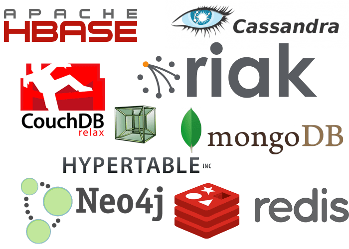
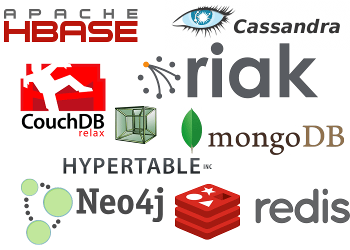
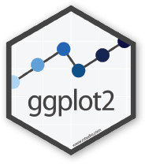
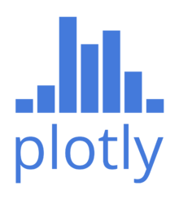
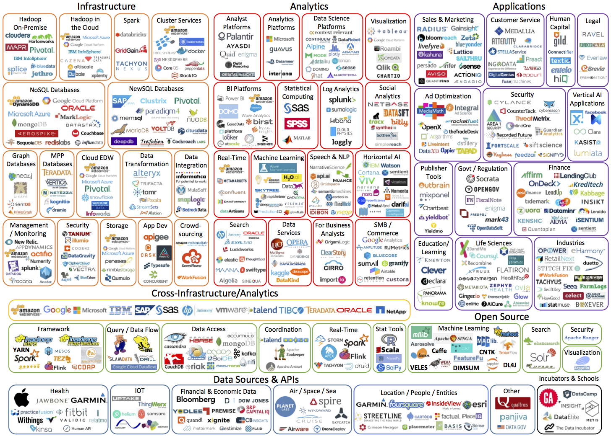
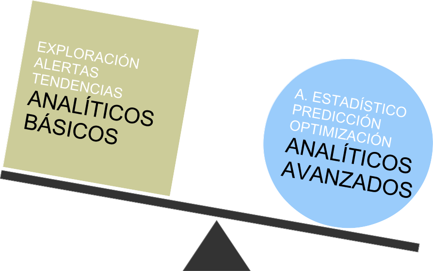

Agenda
- Innovación en Tecnología de Información
- Data Science
- ¿Qué es?
- ¿Qúe hace?
- Tipos de Soluciones
- Tipos de Proyectos
- Acerca de nosotros
Innovación en TI
Una herramienta infalible
Innovación en TI
-
La innovación tecnológica es el conjunto de actividades científicas, tecnológicas, financieras y comerciales que permiten introducir nuevos o mejorados servicios, productos, procesos, técnicas y/o sistemas organizacionales.
-
Para poder innovar es necesario considerar cambios en los sistemas tecnológicos así también como cambios en los paradigmas tecnológicos.
-
La innovación en una empresa le permite:
- Ser más eficiente
- Incrementar su nivel de competitividad
- Mejorar la calidad de sus servicios o productos
Innovación en TI
- Resultados esperados:
- Desarrollo de nuevos productos
- Implementación de nuevos procesos o sistemas
- Indicadores de ÉXITO:
- Rentabilidad económica y financiera de la inversión
- Crecimiento de las ventas
- Requerimientos críticos:
- Identificación de las necesidades del negocio
- Capacidad de gestión tecnológica de la organización
Data Science
¿Qué es? y ¿Qué hace?
Data Science es un campo interdisciplinario que involucra los procesos y sistemas para extraer conocimiento o un mejor entendimiento de grandes volúmenes de datos en sus diferentes formas y formatos.
Recolección
Almacenamiento
Combinación
Análisis
Visualización
Recolección
Conectarse a data estructurada y no-estrucutrada:
- Clicks, Sensores, Teléfonos Móbiles, etc.
- APIs (Application Program Interface):
- Redes Sociales, Servicios en Línea, OAuth (Open standard for Authorization)
- Conectores a Bases de Datos (obdc, jbdc, etc.)
- Formatos comunes: XML, Json, csv, xlxs, ...
- Muestreo, encuestas, etc.
Recolección (Cont...)
Solución Tradicional


Nueva Propuesta


Almacenamiento
Recolectar, integrar y administrar datos históricos:
- Base de Datos Relacionales
- Base de Datos No Relacionales
- Hadoop Distributed File System (HDFS)
- Resilient Distributed Datasets (RDD)
- Cloud Services
Almacenamiento (Cont...)
Solución Tradicional

Nueva Propuesta


 

Combinación
Validación y dimensionalización de data, aplicando reglas de negocio "on the fly" para análisis contextuales:
- Reporte de excepciones y validaciones
- Notificaciones y alertas de soporte
- Transformaciones de Negocio
Puede considerarse como parte del Almacenamiento de datos
Análisis
Ejecución de Análisis descritivos y predictivos por medio de librerias estadísticas de funciones y features:
- Análisis Exploratorio, Distribuciones y su significado
- Causality
- Transformaciones y Features
- Machine Learning
Análisis (Cont...)
Solución Tradicional
Nueva Propuesta
-
Lenguajes de Programación

Herramientas de BI
Visualización
Descrubimiento de insights por medio de visualizaciones diversas y compresivas:
- Visualizaciones Interactivas
- Storytelling with data
- Dashboards
Visualización (Cont...)
Solución Tradicional
Nueva Propuesta
-
Open Source
 

Requieren Licencia


Quien es quien en Big Data y Analytics (2016)

Tipos de Soluciones
Tipos de Soluciones

Ejemplos de Soluciones
Retail
Manufactura
Finanzas
Data Science
Tipos de Proyectos
Tipos de Proyectos
| Asesoría | Laboratorio de Datos | Piloto | Proyecto end-to-end | Apoyo en la definición e implementación de la estrategia de Data Science. | Asignación de recursos enfocados específicamente en estudiar los datos y proponer soluciones de Data Science. | Ensayo a escala del desarrollo de una solución. Se considera la medición de resultados para conocer su impacto | Desarrollo e Implementación de una solución de Data Science, con alcance y temporalidad definidos. |
|---|
Acerca de nosotros
Acerca de nosotros
Alejandra Burrola
Alejandra ha participado en diferentes asignaciones y proyectecos con diferentes organizaciones: Intellego, FIFCO, OXXO, CustoLogix, Neoris, CEMEX, Gruma, Binbit Group, y RealComms.
Ella es Lic. Actuaria egresada de la Universidad Autónoma de Guadalajara
Arturo Cárdenas
Auto-proclamado “Data Science Late Bloomer”, cuenta con más de nueve años de experiencia combinando supply chain y analytics.
En su proyecto más reciente colaboró con Procter & Gamble en Toronto, Canada para el equipo que atiende a Walmart mejorando el desempeño de cadena de suministro por medio de la analítica de datos. Arturo estudió Ingeniería Mecánica en el ITESM y cuenta con estudios de posgrado en McGill University.
José Ayala
José estudio la carrera de Ingeniero Mecánico Administrador solo para darse cuenta que lo suyo era BI y la ingeniería de datos.
Actualmente se desempeña como responsable del laboratorio de datos de OXXO en donde en una máquina procesa TB de información mientras que en otra desarrolla visualizaciones y dashboards.
Empresas con las que hemos trabajado
Data Science
Q&A
Gracias!
atte: